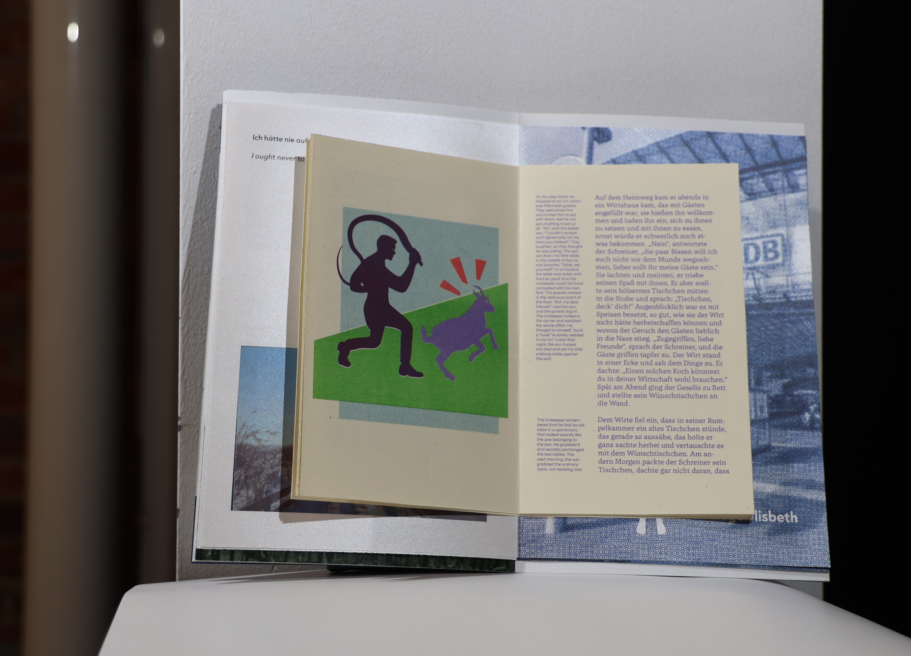
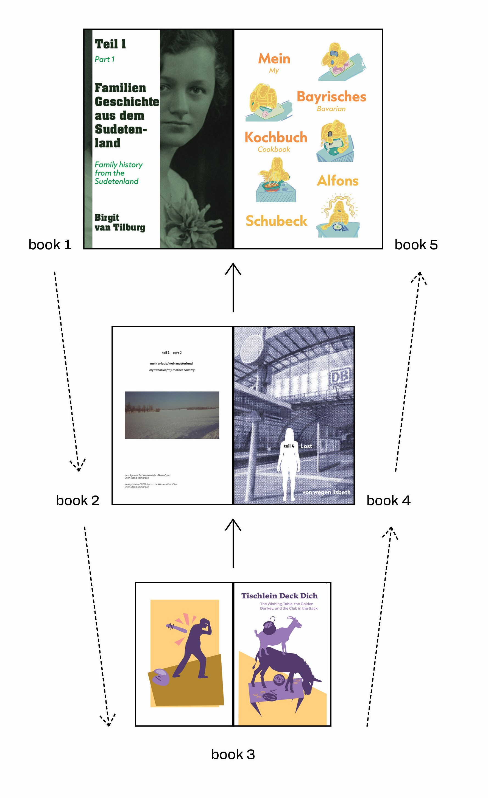
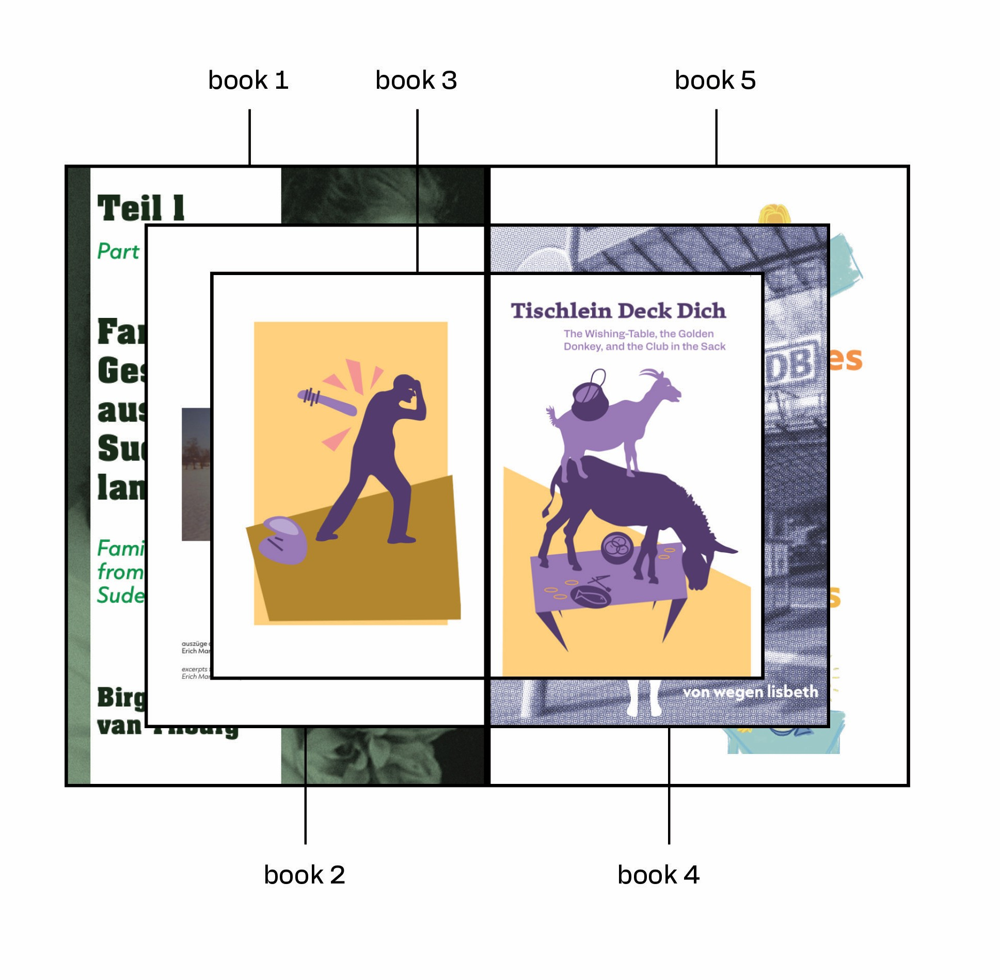
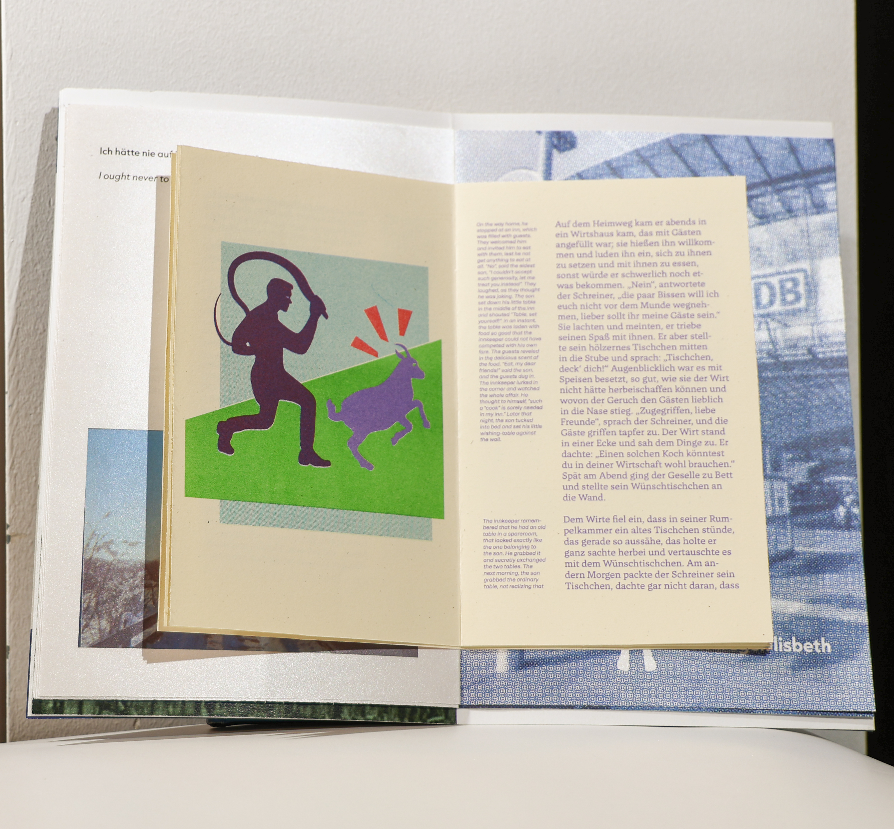
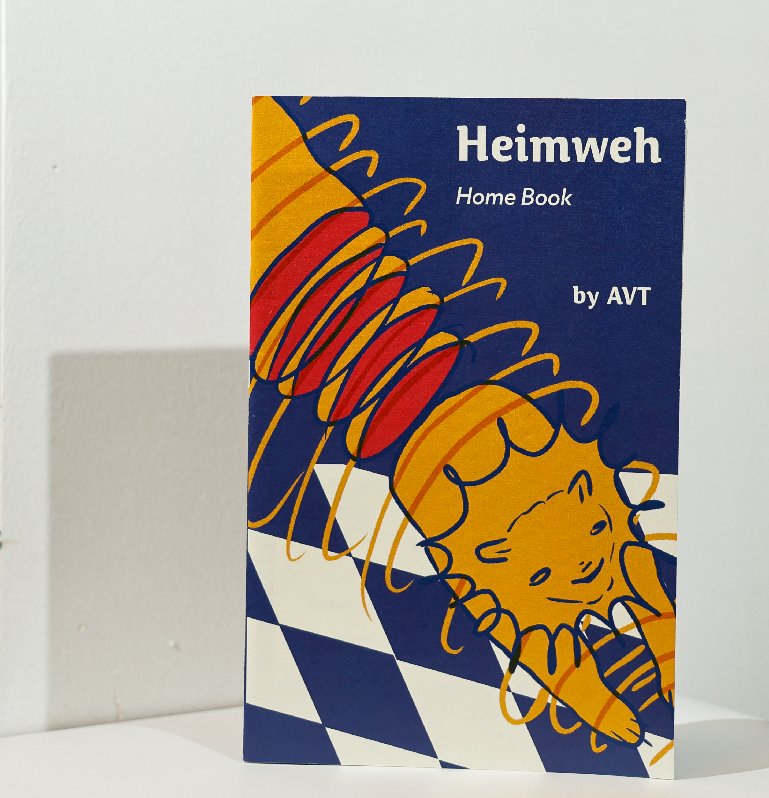
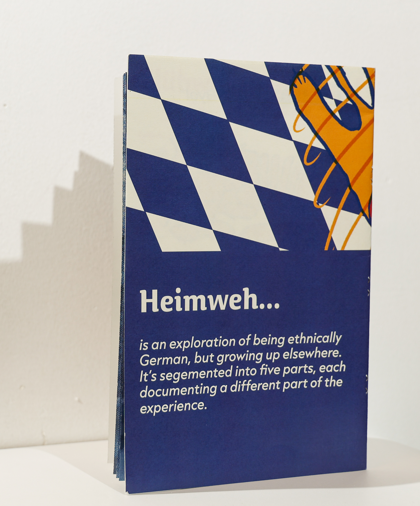

Home Book
Project Type: Class, Typography 2
Mediums: various
Skills: various
This one's a bit complicated, so I'll try to explain my thinking as best as possible. There will be flowcharts. The
Home Book was a project where we designed, printed, and bound a book using several external sources to depict what home means to us.
My book represents my relationship with Germany, as despite being half-German, I grew up in the US, and have always struggled with finding "home".
I used five different sources, each originally written in German, then translated by me. The order and structure of the book was meant to demonstrate
my personal journey with identity. The first book is the outermost, and explains my family history. As the reader moves inwards, the stories get more personal,
culminating in a children's fairytale. Then, moving outwards again, the reader follows my own reconciliation with myself.


Each section had its own distinct identity, reflected in the visual and type design. Illustration, photo manipulation, vector illustrations, and many other techniques
were combined. To further push this, each book was printed on a different type of paper. The smallest book, book 3, was printed in risograph.


